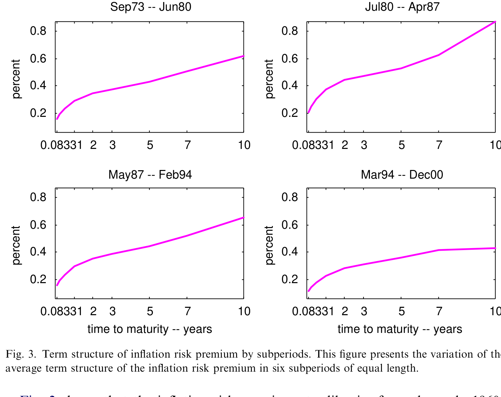
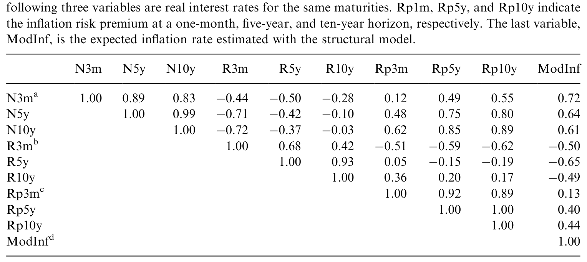
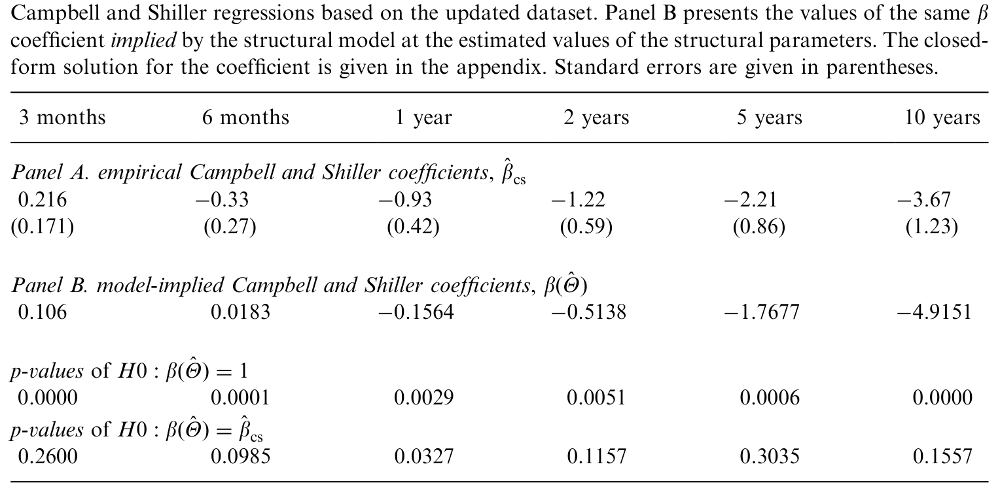
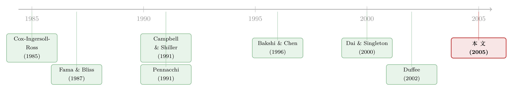

通胀这道暗税，如何写歪了整条利率曲线
本文读的是 Buraschi & Jiltsov (2005, Journal of Financial Economics)：他们在一个带税收、且货币政策内生的货币版实际经济周期模型里，把美国国债曲线里的「通胀风险溢价 (inflation risk premium)」结构性地解了出来——过去四十年十年期通胀风险溢价平均约 70 个基点，会随商业周期在 20–140 基点之间起伏，期限结构陡峭向上；而正是这一块时变的溢价，让模型得以复现 Campbell-Shiller 回归里那个著名的「反常」斜率，从结构上解释了预期假说为何失败。
1 一个老掉牙、却始终没被「讲清楚」的失败
先抛一个几乎所有学利率的人都被折磨过的事实：预期假说 (expectations hypothesis, EH) 在数据里站不住脚。
预期假说说的是一句很朴素的话——长期利率不过是未来一连串短期利率的平均，所以今天的「收益率利差 (yield spread)」应该能预测未来短端利率的走向，斜率系数理论上等于 1。可 Campbell and Shiller (1991) 把这个回归跑出来，斜率不仅不是 1，反而是负的，而且期限越长、负得越离谱。
这件事本身不新鲜。真正让人难受的是：我们解释不了它。 Dai and Singleton (2000) 把当时主流的仿射模型 (affine model) 拿来硬怼这组系数，结论近乎绝望——他们直接写道，一个三因子的 CIR（Cox-Ingersoll-Ross）模型「wholly incapable of matching linear projection yield (LPY) coefficients」，并把失败归咎于 CIR 模型的一条硬约束：风险溢价被锁死成因子波动率的固定倍数。
于是这一行研究分了两条岔路。一条是降维务实派：既然约束太死，那就把风险价格 (price of risk) 写成状态变量的一个更灵活的、但说到底是「拍脑袋」的函数——Duffee (2002) 与 Dai and Singleton (2000) 的「本质仿射 (essentially affine)」模型就是这么干的，效果立竿见影，但你说不清这个灵活的风险价格到底从哪来。
接着，一个自然的问题是：能不能不靠外生假设、而是让这种灵活性在均衡里长出来？这正是 Buraschi 和 Jiltsov 这篇拿了 WFA「最佳投资论文奖」的文章想做的事。而他们押注的那个机制，乍听之下和利率曲线八竿子打不着——税法。
2 核心一招：通胀之所以「被定价」，是因为税基不挂钩物价
如果只能记住这篇论文的一件事，记住这句：美国的税基是按名义历史成本算的，于是通胀会偷偷侵蚀企业的实际税后回报，把通胀变成一个真正影响实物投资、进而被资产价格「定价」的风险因子。
传统的仿射利率模型几乎都默认一条「费雪中性 (Fisher neutrality)」：名义利率 = 实际利率 + 预期通胀，通胀只是套在实际经济外面的一层「面纱」，不影响实体决策。但证据一直在反对它——Benninga and Protopapadakis (1983)、Fama (1990)、Boudoukh (1993) 都发现通胀率和实际利率是负相关的；Fama and Gibbons (1982) 更直接地指出，通胀上升时名义债券的实际回报会下降。
那通胀凭什么不中性？以往货币 RBC 模型给的答案是「现金技术」渠道：通胀高了，大家少用现金、改用别的活动。本文说，这个渠道太弱，真正要紧的是另一条——财政系统不指数化。
举两个例子，都是美国税法里实打实存在的：
- 折旧 (depreciation)：折旧抵税是按资产的名义「历史成本」算的，而不是按当前的重置成本。通胀一来，这笔抵扣的实际价值缩水，于是实际应税利润反而上升、税负加重——用越长寿命资本的企业受伤越深。
- 资本利得税 (capital gains tax)：资本利得是按名义增值课税的。给定一个固定的实际税前回报，通胀越高，名义增值越大，缴的税越多，实际税后回报被通胀啃掉一块。
把这两条写进生产决策，结论就变了：通胀上升 → 实际税后资本回报下降 → 企业减少投资、转向短寿命资本 → 实际资源配置被扭曲 → 均衡资产价格与风险溢价随之改变。通胀于是成了一个有资产定价含义的风险因子。 由于美国资本利得税率 \(\tau_{cg}\) 大约 30%、税基规模又极大，作者强调这是个「一阶」效应，而非可以忽略的零头。
这条「货币—税收—实体—资产价格」的暗线，和此前一篇把货币政策接到企业资本结构上的研究在精神上是相通的（关于「货币如何通过企业财务决策传导」这条思路，可参见《银行不缺钱，却放不出款——一条藏在「股本」里的货币政策暗线》）。
3 模型：把这条暗线一步步写成方程
这是一篇标准的结构式一般均衡论文，所以值得把骨架摆清楚。经济体里只有一个代表性家庭，时间可分、效用对数：
$$U(X) = \int_0^\infty e^{-\rho t}\,\ln X_t\, dt$$
第一步，把货币塞进效用（Assumption 1）。 持有实际货币余额 \(M^d_t\) 能提供一种「购物技术」服务，减少达到既定净消费所需的资源，于是「毛消费」\(X_t\) 和净消费 \(C_t\) 的关系是：
$$X_t = C_t\,(M^d_t)^{\gamma}, \qquad 0\le\gamma\le 1$$
\(\gamma=0\) 时货币不提供任何服务。这一步保证了货币在均衡里被正持有。
第二步，让资本的边际生产率随机波动（Assumption 4）。 这是模型能生成「状态依赖风险价格」的发动机。生产因子向量服从一组带平方根扩散的随机过程：
$$dy^i_t = z^i_t\,\mu^i_y\, dt + \sigma^i_y\sqrt{z^i_t}\, dW^{yi}_t, \qquad 1\le i\le k$$
$$dz^i_t = (\xi^i z^i_t + \zeta^i)\, dt + \sigma^i_z\sqrt{z^i_t}\, dW^{zi}_t, \qquad 1\le i\le k$$
$$E\!\left(dW^{yi}_t\, dW^{zi}_t\right) = \rho_{yi,zi}\, dt$$
这套设定的妙处在于参数分工：当 \(\mu^i_y\neq 0\) 而 \(\sigma^i_y=0\) 时，状态变量 \(z^i_t\) 只影响资本的瞬时回报；当 \(\mu^j_y=0\) 而 \(\sigma^j_y>0\) 时，\(z^j_t\) 只影响其局部方差。换句话说，作者把「资本生产率的不确定性」和「这种不确定性本身的波动率」拆成了两件可以独立调的事——这正是让市场风险价格不再是波动率固定倍数的关键。
第三步，货币政策内生（Assumption 5）。 货币供给不是外生给定的，而是仿 Taylor (1993) 规则，盯着产出缺口和通胀缺口反应：
$$\frac{dM^s_t}{M^s_t} = w_t\, dt + q_1\!\left(\frac{dK^n_t}{K^n_t} - k^{*}dt\right) + q_2\!\left(\frac{dp^n_t}{p^n_t} - \bar\pi\, dt\right) + \sqrt{\sigma^2_{0M}+\sigma^2_{1M}v_t}\,\, dW^M_t$$
这一笔让作者得以把「纯粹的外生货币冲击」和「为回应实体冲击而注入的货币」区分开——后面做风险溢价分解时，这个区分是核心。
但真正关键的一步在于税收（Assumption 3）。 这才是整篇文章的「机关」。资本利得税写成：
看 \(a2\) 这一块就够了：课税基数是名义价格变动 \(\tfrac{p_{t+h}-p_t}{p_{t+h}}\)。这意味着哪怕实际增值为零，只要有通胀，名义增值就是正的，就要缴税。通胀越高，这笔「凭空多缴的税」越重，企业实际税后回报越低。费雪中性就是在这一行被打破的——通胀通过税法，硬生生改写了资本积累方程，进而改写了均衡里的实际利率与风险溢价。作者顺带验证：如果把财政系统完全指数化，资本积累方程就退化回一个不含通胀扭曲的干净形式，溢价也随之消失。
把这些拼起来求解，作者得到一个有意思的结果：状态变量虽然走的是仿射过程，但均衡里的市场风险价格并不是利率局部波动率的固定倍数。 这恰恰是 Duffee 与 Dai-Singleton 在简约式里靠手工捏出来的那个特征——在这里，它是内生的。
4 估计与数据
作者用美国国债数据估计这套结构参数（McCulloch 整理的期限结构数据是这一行的标准来源），样本覆盖过去约四十年。识别的逻辑是：模型对名义收益率曲线、其条件二阶矩、以及通胀过程同时施加了交叉约束，结构参数要在这些矩条件下被同时钉住。这种「一个结构模型同时拟合资产价格与宏观变量」的取舍，作者在第 9 节专门讨论——这也是结构式方法相对简约式的代价：它没有 Duffee (2002) 那种风险价格的自由度，得用更少的旋钮去同时迁就债券价格和宏观时序。
5 主要结果：70 个基点，和它会呼吸的期限结构
第一组结论，关于通胀风险溢价的量级：
- 过去 40 年，一个月期通胀风险溢价平均
15个基点； - 但十年期通胀风险溢价平均高达
70个基点； - 期限结构陡峭向上，长端溢价大约是短端的
4倍； - 而且它时变——随商业周期在
20到140个基点之间摆动。
这条会「呼吸」的溢价曲线，是名义债券与实际债券利差里相当大的一块。它的时间序列如图 2 所示：从 1960 年代初起步，伴着商业周期起起落落，整体台阶式抬升。

Figure 2: shows that the inflation risk premium steadily rise from the early 1960s
第二组结论，关于它解释了什么。作者发现，通胀风险溢价解释了 5 年期远期风险溢价时间变异的 23%、10 年期的 42%——也就是说，期限越长，通胀这块越是远期溢价波动的主角。表 3 把预期通胀、名义利率与通胀风险溢价之间的关系摆在一起。

Table 3: shows that expected inflation, nominal rates, and the inflation risk
第三组结论，是把总风险溢价拆成货币冲击与实际冲击两块。借助内生货币政策那一笔，作者算出：货币因子贡献了风险溢价时间变异的 43%。 这是个挺重的数字——它意味着债券风险溢价里近一半的「动」，可以追溯到货币这一侧，和 Cochrane and Piazzesi (2002) 强调货币冲击对债券超额回报很重要的发现遥相呼应。
6 反转：原来 EH 的失败，是溢价在「呼吸」
绕了一大圈，回到开头那个失败的预期假说。
真正漂亮的一步是：作者解析地求出了模型隐含的 Campbell-Shiller (1991) 回归系数，然后和 Campbell、Shiller 当年用真实数据跑出来的系数去比。结论是——两者在统计上没有显著差异。 也就是说，这个结构模型不靠任何针对 LPY 系数的「特制」，就自动吐出了那条人人头疼的、随期限越来越负的斜率。表 5 把模型与数据的斜率系数并排放在一起。

Table 5: summarizes the results. We find that both the absolute levels of the slope
为什么能成？因为模型生成的远期风险溢价高度时变，而时变的幅度足够大，大到足以拒绝预期假说。换个角度说：EH 之所以在数据里失败，并不是因为投资者「非理性」，而是因为有一块会随商业周期与通胀起伏的风险溢价藏在收益率利差里，污染了那个本该等于 1 的斜率。而这块溢价，归根结底，是被那条不指数化的税法喂大的。
这就是这篇文章的核心贡献：它把「EH 为何失败」「通胀风险溢价多大」「市场风险价格为何状态依赖」这三件看似独立的事，串进了同一个结构故事里。
7 文献脉络
把这条线捋一捋，能更清楚地看到这篇文章站在哪。
最早，期限结构的均衡基石是 Cox, Ingersoll, and Ross (1985b) 的 CIR 模型——优雅、可解，但把风险溢价锁成了波动率的固定倍数。实证那一侧，Fama and Bliss (1987) 揭示了远期利率的可预测性，Campbell and Shiller (1991) 则用 LPY 回归把预期假说的失败钉死成一组「反常」系数（关于远期利率到底预言了什么这条更早的线索，可参见《利率走过的那道长弧：远期利率预言的，究竟是什么？》）。

接着，通胀这条支线开始独立生长。Pennacchi (1991) 把 Vasicek 模型一般化、用调查数据识别预期通胀，第一次认真区分了名义与实际利率，但他的同方差假设让风险溢价没法时变。Bakshi and Chen (1996) 给出了货币经济里名义期限结构的闭式解，却抽掉了税收扭曲。然后是降维务实派的两座里程碑——Dai and Singleton (2000) 系统诊断了仿射模型的设定、并指出 CIR 解释不了 LPY 系数，Duffee (2002) 用「本质仿射」把风险价格放松成状态变量的灵活函数。
本文 (2005) 所处的位置，正是在「务实派靠外生假设捏出灵活风险价格」与「结构派想从均衡里把它长出来」之间——它选了后一条更难走的路，用税收非中性这一个结构机制，同时交付了时变溢价、状态依赖风险价格、和对 EH 失败的解释。
评论与延伸（Q&A + 研究方向）
(a) 几个可能的疑问
Q：通胀风险溢价，和费雪关系里的「预期通胀」到底是两回事吗？
是两回事。名义利率约等于实际利率 + 预期通胀 + 通胀风险溢价。前两项是「水平」的补偿，最后一项是因为通胀不确定、且这种不确定性与实际经济负相关，投资者要为承担它额外索取的风险价格。本文的全部火力都对准最后这一项，并说明它之所以为正且时变，源于税法把通胀变成了一个影响实体回报的定价因子。
Q：70 个基点这个数，可信吗？会不会是模型设定逼出来的？
这是结构估计，数字确实依赖模型设定，这是它的软肋。但作者给了两个旁证让人稍微放心：一是模型未经特制就能匹配 Campbell-Shiller 系数（一个它没被直接拿去拟合的目标），二是 70bp 的量级与同期用 TIPS/调查数据做的简约式估计大体在一个数量级上。把它当成一个「结构上自洽的中位猜测」，比当成精确测量更稳妥。
Q：为什么通胀风险溢价的期限结构是陡峭向上的（长端约为短端 4 倍）？
直觉上，通胀的不确定性是「累积」的——持有十年名义债券，要承担十年里通胀路径的全部偏离，而一个月债券几乎不暴露于此。再叠加税收扭曲对长寿命资本的伤害更大，长端自然要求高得多的补偿。
Q：「货币因子解释 43% 的风险溢价变异」——这个分解可信吗？
这个分解完全依赖内生货币政策那条假设（Assumption 5）把货币冲击和实体冲击识别开。如果货币规则设定有偏，这个 43% 会随之漂移。它更应被读作「在这套 Taylor 型规则下，货币侧解释了相当大一块」，而非一个无模型的事实。
Q：能匹配 Campbell-Shiller 系数，就等于「解释了」预期假说的失败吗？
匹配系数是必要不是充分。它说明「时变风险溢价 + 税收非中性」这一套足以复现那组反常斜率，但不能排除别的机制（如学习、市场分割）也能产生同样的系数。本文的贡献是给出了一个结构上讲得通、且参数被宏观与价格同时约束的候选解释。
Q：相比 Duffee 的简约式，这篇结构模型「更好」在哪、又「更差」在哪？
更好：风险价格的灵活性是内生的，你能问「如果税法指数化会怎样」这种反事实问题，简约式答不了。更差：作者自己承认，它的风险价格没有 Duffee (2002) 那么灵活，还背着 RBC 模型的老毛病（难复现产出增长的持续性、股权溢价偏低）。这是「可解释性」换「拟合自由度」的经典取舍。
(b) 几个可能的研究问题与提案
1. 把通胀风险溢价搬进公司债
【经济故事】本文做的是国债。但公司债的名义现金流同样暴露于通胀，而违约风险又与商业周期（进而与通胀）纠缠。一个自然的问题是：信用利差里有多少其实是通胀风险溢价的「映射」，而非纯信用补偿？ 【可行性】中。数据上 TRACE + TIPS + 国债曲线齐备，识别难点在于把通胀风险与信用风险干净地拆开，可能需要同一发行人名义债与（少数）通胀挂钩债的配对，样本偏薄。
2. 外资持有人与通胀风险定价
【经济故事】不同国别的投资者对美国通胀的暴露不同（本币不是美元、税制也不同）。当外资在美债市场的份额起落时，通胀风险溢价的「价格」是否随之变化？这把本文的封闭经济推向了一个有持有人异质性的开放经济。 【可行性】中偏低。需要 TIC 持有人数据 + 通胀风险溢价的可信估计，外资份额的外生变动不易找，可能要借助配置规则或税制改革做工具。
3. 财政指数化的自然实验
【经济故事】本文的机制完全建立在「税基不指数化」上。若能找到某国（或美国某次税改）局部引入了折旧/资本利得的指数化，就能直接检验通胀风险溢价是否随之收缩——这是对核心机制最干净的检验。 【可行性】中。难点在于找到时点清晰、范围可界定的指数化改革，并控制同期货币政策的混淆；DiD 框架原则上可行。
4. 通胀风险溢价与债券基金的流动性
【经济故事】当通胀风险溢价飙升（如 1970 年代末或 2022 年），名义债券价格大跌，是否会通过基金赎回放大成流动性事件？把宏观的「溢价呼吸」接到微观的「赎回—甩卖」上。 【可行性】高。基金持仓与资金流数据成熟，通胀冲击的时点可由 CPI 意外度量，识别相对干净。
我的判断
这篇文章的贡献在于用一个具体、可验证的结构机制——税基的名义性——把三件长期各说各话的事（EH 的失败、通胀风险溢价的量级、风险价格的状态依赖）统一了起来。它最漂亮的地方是「越界验证」：模型没被拿去拟合 Campbell-Shiller 系数，却吐出了对的系数，这种 out-of-design 的匹配比任何 in-sample 的拟合都更有说服力。
对识别，我有两点保留。其一，结论高度依赖货币政策规则（A5）的设定，那个「43% 归货币」的分解尤其脆弱，换一组规则参数恐怕就会显著变化。其二，它继承了 RBC 模型的全部老毛病——时间可分偏好、难复现增长持续性，这些会不会通过后门污染了对溢价时变性的估计，文中讨论得还不够。
后续我最想看到的，是把这套结构估计放到 TIPS 时代重做一遍：1997 年后美国有了真正的通胀挂钩债，可以直接观测（而非反推）实际利率与盈亏平衡通胀。如果本文的 70bp 和它会呼吸的期限结构，能在 TIPS 数据上被独立地复现出来，这个故事才算真正闭环。
参考文献
- Bakshi, G.S., Chen, Z. (1996). Inflation, asset prices, and the term structure of interest rates in monetary economies. The Review of Financial Studies 9(1), 241–275.
- Benninga, S., Protopapadakis, A. (1983). Real and nominal interest rates under uncertainty: the Fisher theorem and the term structure. Journal of Political Economy 91, 856–867.
- Boudoukh, J. (1993). An equilibrium model of nominal bond prices with inflation-output correlation and stochastic volatility. Journal of Money, Credit and Banking 25, 636–665.
- Buraschi, A., Jiltsov, A. (2005). Inflation risk premia and the expectations hypothesis. Journal of Financial Economics 75, 429–490.
- Campbell, J.Y., Shiller, R.J. (1991). Yield spreads and interest rates movements, a bird's eye view. The Review of Economic Studies 58, 495–514.
- Cochrane, J., Piazzesi, M. (2002). Bond Risk Premia. NBER Working Paper 9178.
- Cox, J.C., Ingersoll, J.E., Ross, S.A. (1985b). A theory of the term structure of interest rates. Econometrica 53, 385–407.
- Dai, Q., Singleton, K. (2000). Specification analysis of affine term structure models. Journal of Finance 55, 1943–1978.
- Duffee, G. (2002). Term premia and interest rate forecasts in affine models. The Journal of Finance 57, 405–443.
- Fama, E.F. (1990). Term structure forecasts of interest rates, inflation, and real returns. Journal of Monetary Economics 25(1), 59–76.
- Fama, E.F., Bliss, R. (1987). The information in long maturity forward rates. American Economic Review 77, 680–692.
- Fama, E.F., Gibbons, M.R. (1982). Inflation, real returns and capital investment. Journal of Monetary Economics 9, 297–323.
- Pennacchi, G. (1991). [Generalized Vasicek model of real rates and expected inflation]. Review of Financial Studies.
- Taylor, J.B. (1993). Discretion versus policy rules in practice. Carnegie-Rochester Conference Series on Public Policy.